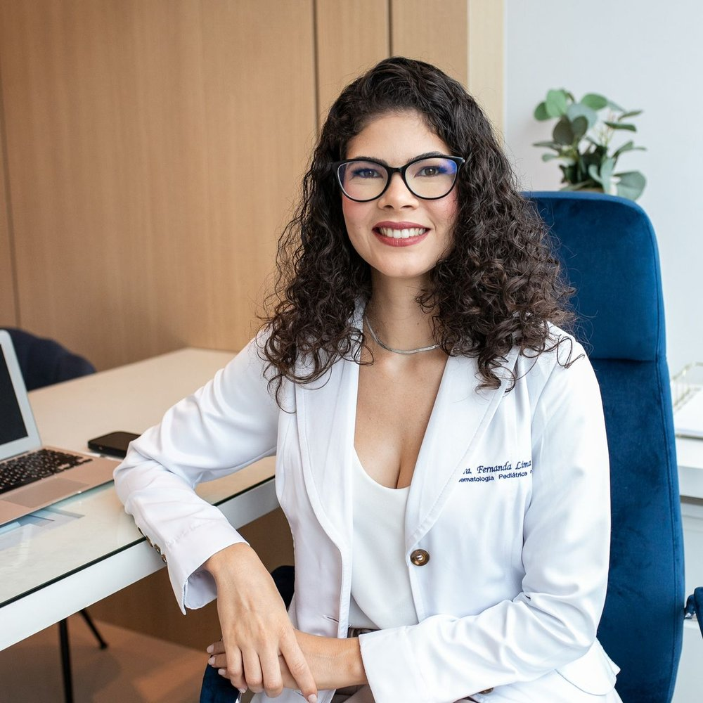

Início · Sobre
Dra. Fernanda Lima Lelis: pediatra, por escolha.
Pediatra com área de atuação em Hematologia e Hemoterapia Pediátrica e formação em transplante de medula óssea em crianças e adolescentes. CRM-BA 24762 · RQE 12675 · RQE 15394.
Minha história
Da pediatria à hematologia
“Ser médica sempre foi um sonho de infância. […] a sinceridade e o sorriso de uma criança é o que fazia e faz sentido para minha escolha profissional.”
site antigo da Dra. Fernanda (cópia pública do arquivo da internet, 2025) · ver a fonte
“A hematologia pediátrica foi uma paixão, aquela especialidade em que os olhos brilham pelo raciocínio clínico necessário, e que me fez ter certeza de que a doença reflete todo o contexto de vida da criança, como a família, o ambiente em que vive e o desenvolvimento neuropsicológico.”
site antigo da Dra. Fernanda (cópia pública do arquivo da internet, 2025) · ver a fonte

Formação
Formação
- Medicina · 2006–2012Faculdade de Tecnologia e Ciências (FTC), Salvador.
- Residência em Pediatria · 2013–2015Hospital São Rafael, Salvador.
- Hematologia Pediátrica · 2016–2018Hospital Santo Antônio, Salvador (residente de 03/2016 a 02/2018, segundo o CNES).
- Transplante de medula óssea em crianças e adolescentes · 2019–2021Complexo Hospital de Clínicas da UFPR, Curitiba (07/2019 a 04/2021, segundo o CNES).
Fontes: Doctoralia, site antigo e histórico do CNES.
Registros
Títulos e registros
Pediatria
Título de especialista em Pediatria pela Sociedade Brasileira de Pediatria (SBP).
Hematologia e Hemoterapia Pediátrica
Certificado de área de atuação pela Associação Brasileira de Hematologia e Hemoterapia (ABHH), em 30/10/2018 — lista oficial.
Registro
CRM-BA 24762 · RQE 12675 · RQE 15394.
Transplante de medula
Formação em transplante de medula óssea em crianças e adolescentes na UFPR.
Experiência
Experiência
O histórico do CNES registra a trajetória como pediatra em hospitais da Bahia — entre eles o Hospital Estadual da Criança, em Feira de Santana, e o Hospital Martagão Gesteira, em Salvador — e a atuação em hematologia e hemoterapia, inclusive em serviço de hemoterapia e em hemocentro.
Fonte: histórico profissional no CNES.
Trabalhos
Trabalhos
Como atendo
Meu jeito de atender
“Tenho em mente que a criança tem uma família que precisa entender exatamente o que acontece no processo saúde-doença do seu filho […]”
“Experiência” da Dra. Fernanda na Doctoralia · ver a fonte
No site antigo, ela escreve que o tratamento das doenças hematológicas passa por “um acompanhamento com afeto, acolhimento e verdade, associado a evidências científicas”.
Dúvidas frequentes
Perguntas comuns
A Dra. Fernanda é pediatra ou hematologista?
As duas coisas: tem título de especialista em Pediatria e certificado de área de atuação em Hematologia e Hemoterapia Pediátrica.
Ela atende adultos?
Não. O atendimento é de recém-nascidos, crianças e adolescentes.
Onde ela se formou?
Medicina na FTC, em Salvador; Pediatria no Hospital São Rafael; Hematologia Pediátrica no Hospital Santo Antônio; e transplante de medula na UFPR.
Agende
Vamos entender juntos o exame do seu filho.
Consulta particular com hora marcada no Alpha Medical Center, em Alphaville I, ou por vídeo. Fale pelo WhatsApp (71) 99998-1716 e confirme o dia e o horário.